Experiments in Gen AI Code Performance Testing
Method
So, I think an interesting level of complication has been added to this project. Currently, I have to specify the coordinates of the outer shape of every letter in the English alphabet, which I am finding rather tiresome to figure out. It took me until the letter J to think:
sod this, isn't this exactly what this AI thing everyone's been talking about for? Not having to figure things out for myself?
and I set about trying different models to solve the problem for me. Luckily, I was able to steal credentials for OpenAI Pro, Grok, and Claude from a suspecting victim, so I started with comparing them.
First, I required a minor refactor (I said for the upteenth time), so that the series of points defining each letter could be read in as a constant from a file. Then that file could be changed relatively easily, for easy comparison of the output of different models. The prompt I gave to both of them was:
Generate the points to define the geometric shapes of the letters A-Z in the English alphabet, capitalized. Here are some styles guides:
- Lines should be 1/6 in width
- You can define curves with this function:
def arc_points(radius, start_angle, end_angle, center=[0,0], num_points=50): angles = [start_angle + i * (end_angle - start_angle) / (num_points - 1) for i in range(num_points)] points = [ (center[0] + radius * math.cos(math.radians(angle)), center[1] + radius * math.sin(math.radians(angle))) for angle in angles ] return points
- In order to make solid arcs with width 1/6, have the outer arc with radius = 1/2 and the inner arc with radius 1/3
- Letters should fill a square where possible.
Here are some examples of letters I've already made, from A-J:
import math def arc_points(radius, start_angle, end_angle, center=[0,0], num_points=50): angles = [start_angle + i * (end_angle - start_angle) / (num_points - 1) for i in range(num_points)] points = [ (center[0] + radius * math.cos(math.radians(angle)), center[1] + radius * math.sin(math.radians(angle))) for angle in angles ] return points # A A = [(0,0), (1/2, 1), (1, 0), (5/6, 0), (2/3, 1/3), (1/3, 1/3), (1/6, 0)] # B top_arc_points_B = arc_points(1/4, 90, -90, center=[3/4, 3/4]) bottom_arc_points_B = arc_points(1/4, 90, -90, center=[3/4, 1/4]) other_points_B = [(0,0), (0,1)] B = top_arc_points_B + bottom_arc_points_B + other_points_B
etc. for each letter that I had made manually at that point (A-Q).
Results
The letters generated by each model looked like this:
| Letter | Manual Image | o1 Image | Grok Image | Claude Image |
|---|---|---|---|---|
| R |  |
|||
| S |  |
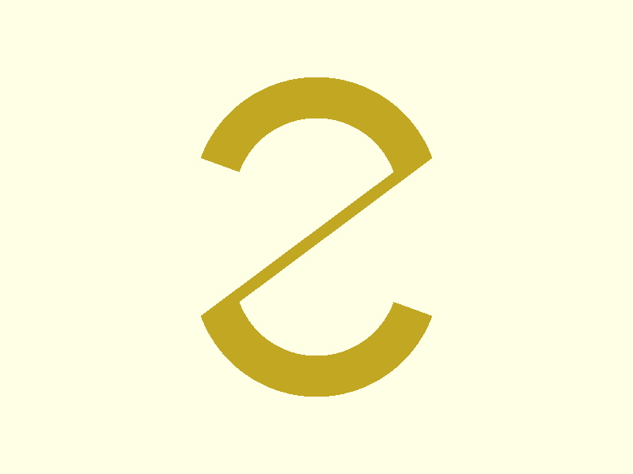 | 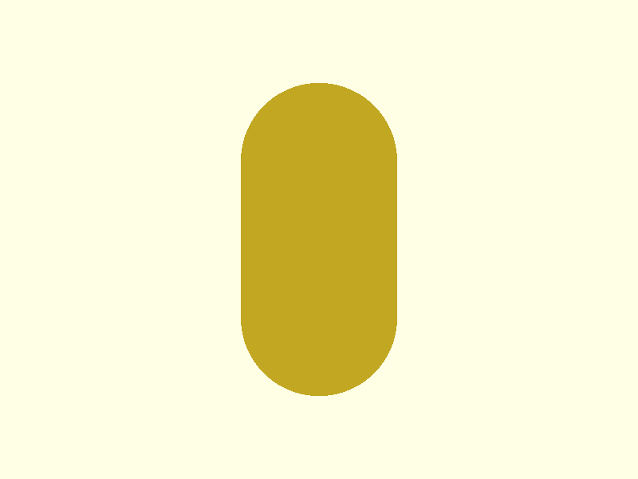 | 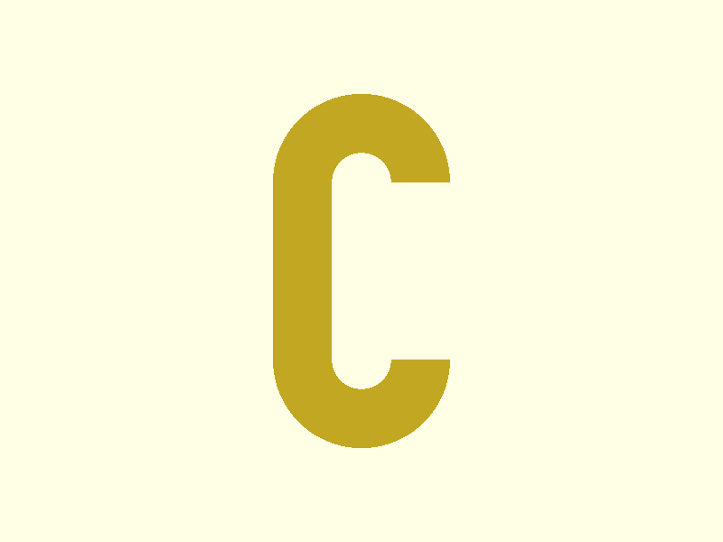 |
| T |  |
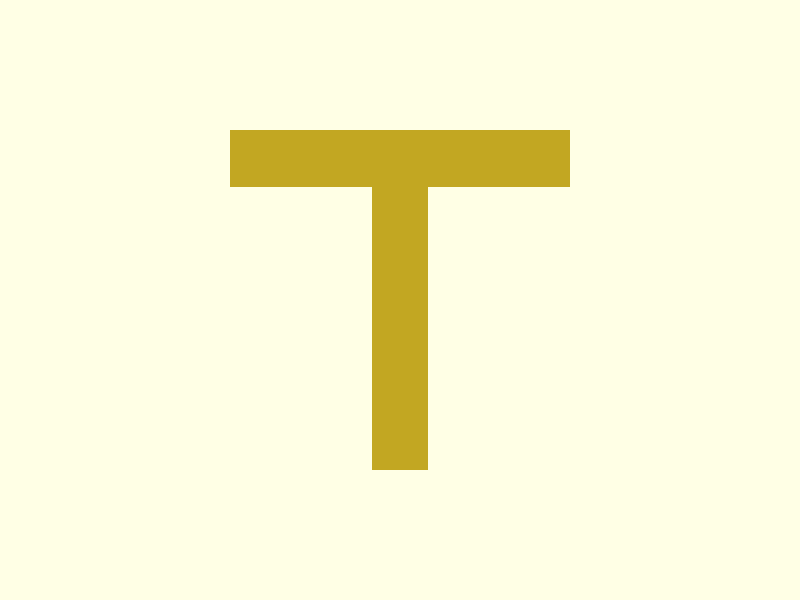 |  |
|
| U |  |
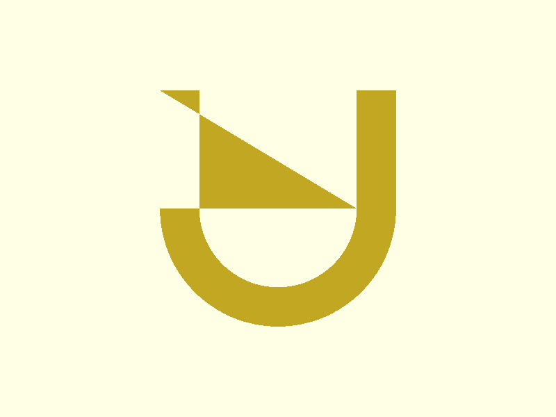 | ||
| V |  |
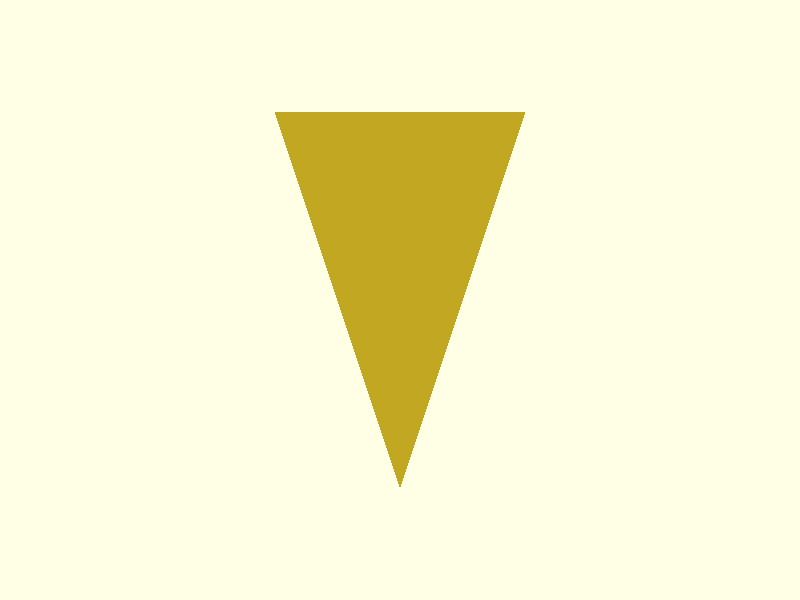 | 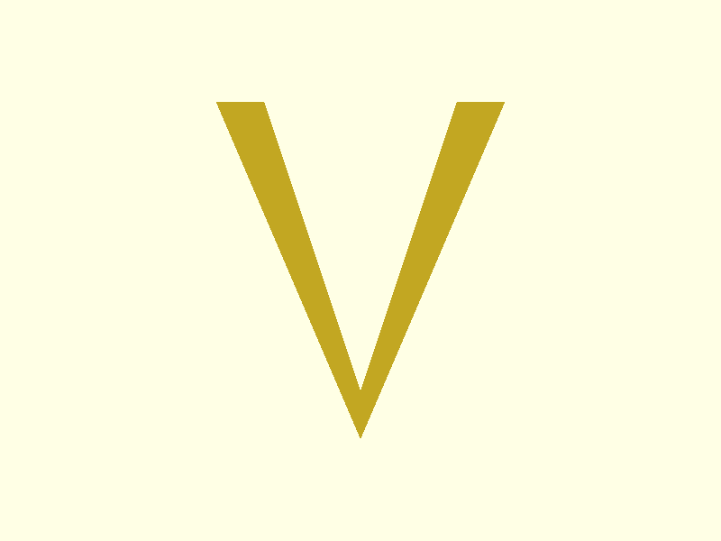 | |
| W |  |
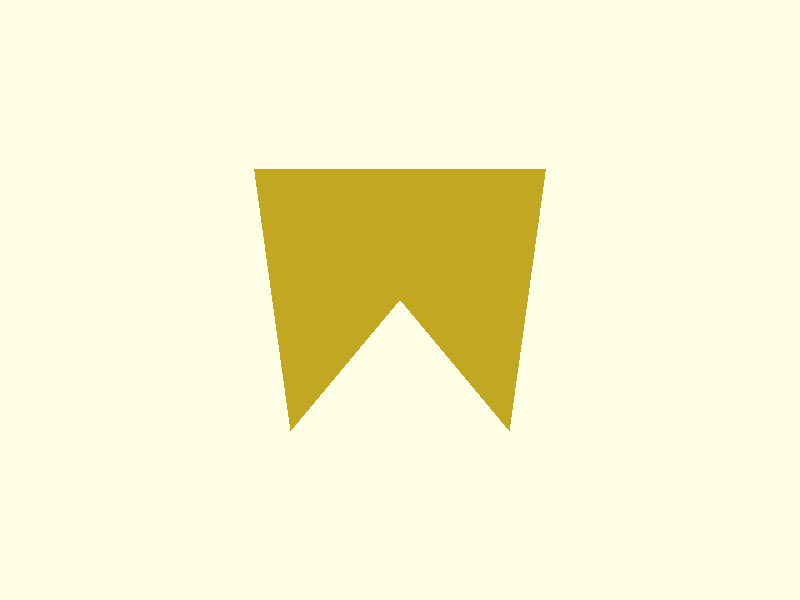 | ||
| X |  |
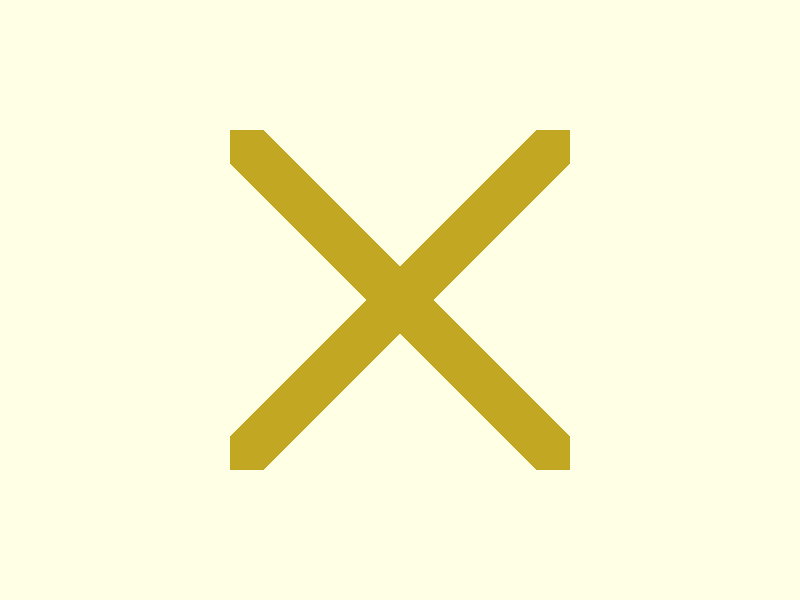 | 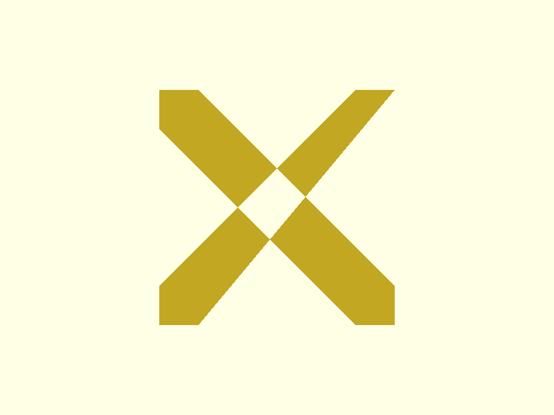 | 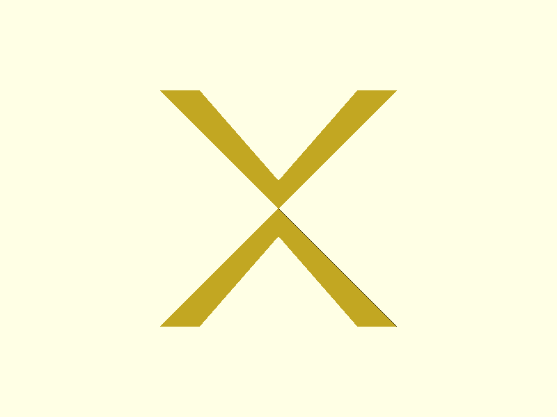 |
| Y |  |
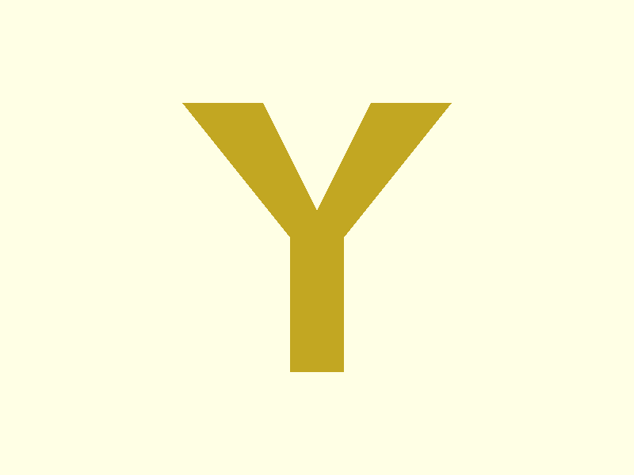 | 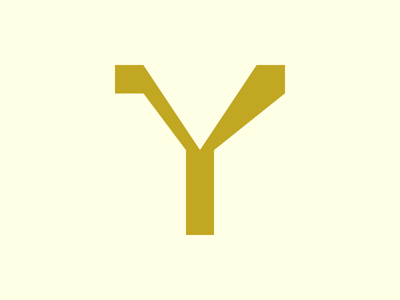 | 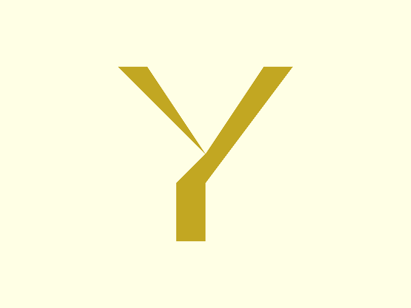 |
| Z |  |
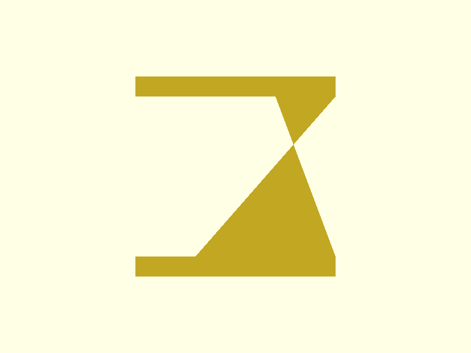 |  |
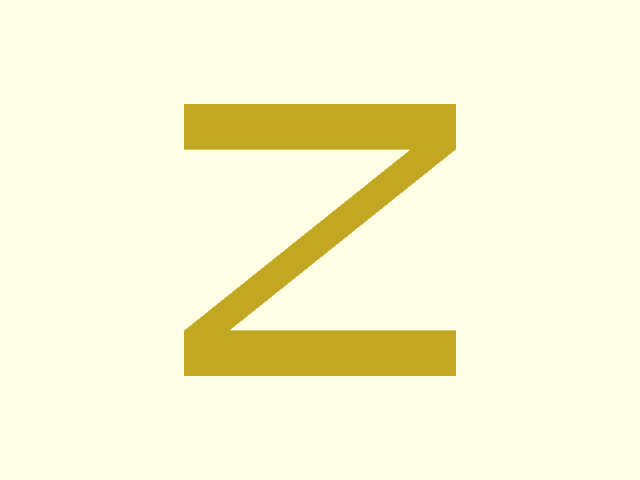 |